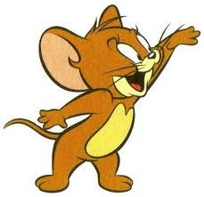

Tom and Jerry. The title card seen in Tom and Jerry shorts from 1946 to 1954. Directed by. William Hanna (1940–58) Joseph Barbera (1940–58)

Mr. Jerry
Tom and Jerry. The title card seen in Tom and Jerry shorts from 1946 to 1954. Directed by. William Hanna (1940–58) Joseph Barbera (1940–58)
Mr. Oggy
Here is OGGY, the only cat the word « feline » can't apply to. He would be the happiest of cats if three hideous cockroaches hadn't decided to settle inside his house